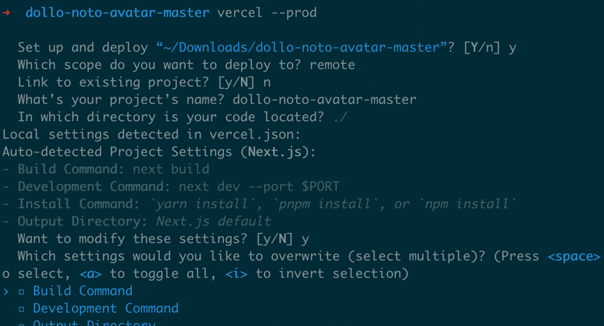

Vercel is a cloud platform for static sites and Serverless Functions. It enables developers to host Node.js based projects simply and with minimal configuration required.
We highly recommend Vercel for hosting your Frontity site as it is serverless, cheap, includes a CDN, and is very easy to set up.
It also supports the cache technique `stale-while-revalidate` (they call it `Serverless Pre-Rendering`). This is a powerful way to improve your site speed.
create an account
Vercel is a cloud platform for static sites and Serverless Functions. It enables developers to host Node.js based projects simply and with minimal configuration required.
We highly recommend Vercel for hosting your Frontity site as it is serverless, cheap, includes a CDN, and is very easy to set up.
It also supports the cache technique `stale-while-revalidate` (they call it `Serverless Pre-Rendering`). This is a powerful way to improve your site speed.
```bash
vercel login
```
After following their security process you will be logged in in your browser. Keep this browser tab open for the time being as we'll be referring to it later.
Deploy your site
Once the file is created you can deploy your project from the command line using this command:
```bash
vercel --prod
```
You'll be asked a short series of questions about your project:

Then, after a brief build process your deployed site will be ready. The address that you can use in your browser's address bar to reach the site will be displayed in the output from the command, and also in the Vercel console in your browser (which you kept open, didn't you?!).